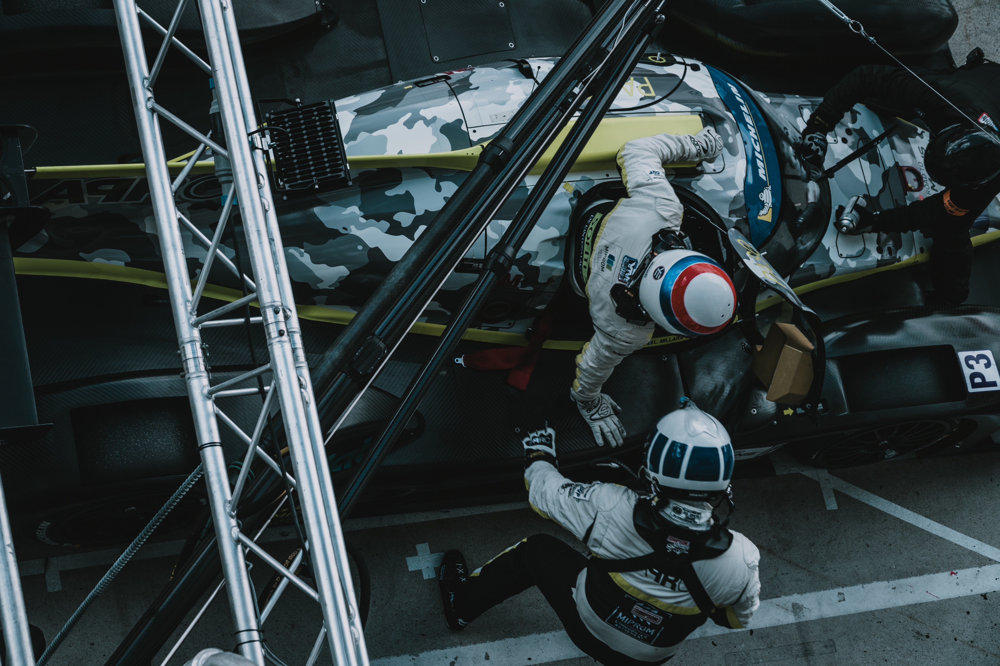
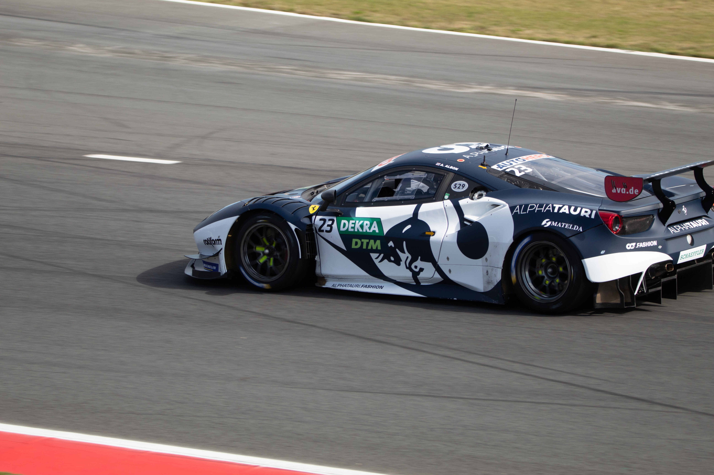

Quienes somos
In a sport where technology and innovation take centre stage, Cognizant is poised to play a key role – not merely as a sponsor, but as a true partner with a real purpose. This is about two brands embarking on a new journey with a shared objective – to lead, to innovate and to be a force for transformative change.
Inicio de una nueva era
The Aston Martin era represents the beginning of a new journey for us, but the racer's attitude and can-do approach remain central pillars in the team’s philosophy. The focus is always on improving performance and delivering results. With fresh investment and energy, the stage is set to build on Aston Martin's rich history in motorsport and establish Aston Martin Aramco Cognizant Formula One™ Team as a competitive force in the years ahead.
Nuevas metas para la marca
When the German became the third driver for BMW-Sauber at the 2006 Turkish Grand Prix, it was Mike who acted as his race engineer. Sebastian gave a glimpse into his star talent by topping second practice on that same weekend, starting his Formula One journey towards becoming a four-time World Champion. Nearly 16 years after that Istanbul weekend, the two are colleagues again. For Mike, his motorsport path took him across a variety of series after leaving BMW. Stints in Formula 3 followed before a return to the German manufacturer as chief engineer of its DTM programme, later joining Porsche for its immensely successful and Le Mans-winning LMP1 efforts. By 2014, he had once again returned to BMW and rose through its ranks to oversee its Formula E, IMSA and GT programmes.
Carrera dia de la mujer
Aston Martin Aramco Cognizant Formula One™ Team is celebrating International Women's Day, highlighting the importance of diversity and inclusion to celebrate and value differences as it stresses the need for equality.
From 1 September 2017, new cars have been type-approved under the World Harmonized Light Vehicle Test Procedure (WLTP), a new, more realistic test method for measuring fuel consumption and CO 2 emissions. From 1 September 2018, the WLTP replaced the new European Driving Cycle (NEDC), the previous test procedure. Because of the more realistic test conditions, the fuel consumption and CO2 emission values measured by the WLTP are in many cases higher than those measured by the NEDC.